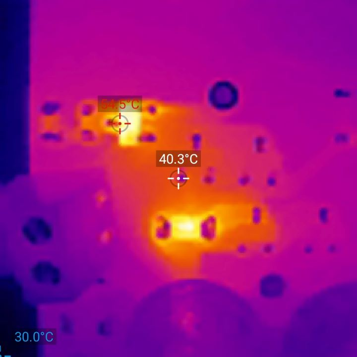
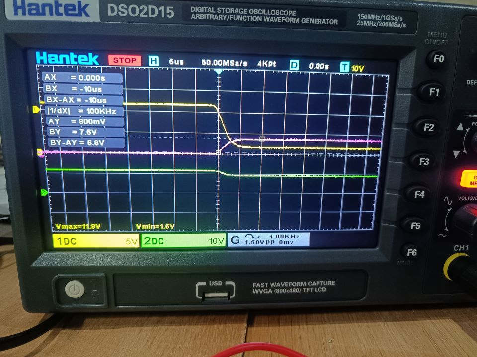
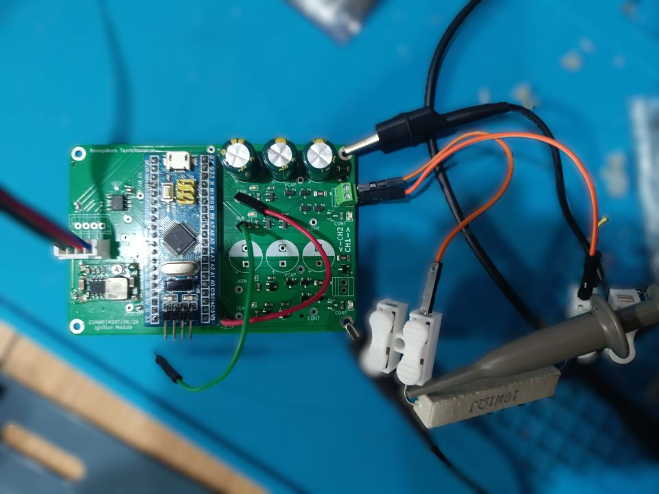

Loading…
Overview
Subsystem of the XSRT Hybrid Rocket Engine Test Bench project.
I designed and built this dual-channel ignition module for the CUHAR / XSRT hybrid rocket engine static fire test stand. In rocket test operations, pyrotechnic ignition is high-stakes: an accidental firing pulse endangers anyone working near the stand, while a sluggish or hanging controller leaves unburned propellants in a hot combustion chamber.
The module sits on the test stand's 500 kbit/s CAN bus (as Node 0x20), receives arming
and firing commands from mission control, checks pyrotechnic e-match continuity, and delivers a controlled
~5.9 A pulse to ignite the engine.
Circuit Design & Power Architecture
Standard bench power supplies hate pyrotechnics. Firing a typical 2 Ω electric match draws around 6 A nearly instantaneously. If pulled directly from the shared 12 V power supply, the voltage collapses, brownout-resetting nearby pressure transducers, load cells, and microcontrollers right at ignition.
- Capacitive Discharge Reservoir: Instead of pulling pulse current from the main bus, each channel charges a local 3 mF capacitor bank (3× 1,000 µF) to 12 V.
- Power Supply Decoupling: During firing, an active NMOS switch cuts off the 12 V bench rail entirely. The ~5.9 A discharge dumps strictly from the local capacitors, so the rest of the test stand instrumentation never sees a dip.
- Mechanical Relay Isolation: Physical relays sit between the firing rail and the squib terminals. Until an explicit ARM command settles, the terminal is physically disconnected from high voltage—even if firmware halts or gate drivers leak.
- Active Safety Bleeder: When disarmed or in an emergency abort, an auxiliary discharge circuit automatically bleeds the 3 mF capacitor bank down below 0.3 V in about 300 ms, leaving the board safe to handle.
- Digital Continuity Check: Integrated sense lines let the STM32 check whether an e-match is physically connected before allowing arming.
Bench Bring-Up & Debugging War Stories
Taking the board from KiCad into physical hardware came with a few tricky bugs that simulations didn't catch:
1. The Inductive Spike & Thermal Camera Catch
During the first discharge test into a dummy load, Channel 1 fired once successfully. But immediately afterward, the capacitor bank wouldn't charge past 8 V, and the circuit drew a continuous 50 mA leakage.
Pointing an infrared thermal camera at the board revealed that the low-side MOSFET (Q17) was running hot at idle (reaching 54.5 °C). The squib lead wires had just enough parasitic inductance that the rapid \(di/dt\) during cutoff created an inductive voltage spike. That spike exceeded the MOSFET's ±12 V \(V_{gs}\) limit and punctured the gate oxide, leaving it partially conductive. Swapping to a MOSFET with higher gate-source breakdown headroom and adding transient suppression fixed it completely.


2. The CubeMX CAN Bit-Timing Silent Trap
During initial communications bring-up, the board refused to join the CAN bus. Checking the STM32CubeMX auto-generated
timing revealed that for a requested 500 kbit/s baud on the 36 MHz APB1 peripheral clock, CubeMX had defaulted to
Prescaler=16, BS1=1TQ, BS2=1TQ:
Baud = 36 MHz / (16 × 3 TQ) = 750 kbit/s
The peripheral was silently running at 750 kbit/s instead of 500 kbit/s, and auto-retransmission was disabled by default.
Recalculating the bit timing to Prescaler=4, BS1=15TQ, BS2=2TQ gave an exact 500 kbit/s rate with an 88.9%
sample point, bringing the CAN node online immediately.

3. Eliminating Floating Continuity Pins
Early prototype firmware assumed continuity could be read as active-low with floating inputs (GPIO_NOPULL).
When no squib was plugged in, the disconnected terminal picked up ambient electrostatic noise and intermittently toggled
between HIGH and LOW. Switching to an active-high circuit with internal pull-downs (GPIO_PULLDOWN) ensured
disconnected squibs solidly read 0 V.
KiCad to SPICE Python Pipeline
Rather than manually redrawing the schematic in LTspice and Falstad CircuitJS to test capacitor sizing and gate drive
timing, I wrote a Python parser that reads the KiCad .kicad_sch S-expression files directly.
The script converts the schematic sheets and wire junctions into an interactive Falstad circuit for browser visualization, and generates LTspice netlists populated with realistic manufacturer VDMOS and BJT models. Running batch simulations confirmed the 3 mF capacitor bank delivers ~0.21 J into a 2 Ω squib within 50 ms before ever soldering a component.
Firmware Failsafes
The firmware runs bare-metal C++17 on the STM32F103, designed with a few critical safety rules:
- Hardware Timer Cutoff (TIM2): The 250 ms firing pulse isn't managed with a software delay loop. A hardware one-shot timer triggers an interrupt service routine that deasserts the gate directly, so the pulse will turn off even if the main loop hangs.
-
ECU Deadman Heartbeat: Mission control broadcasts a periodic heartbeat frame (
0x001). If more than 3 seconds pass without a heartbeat, the module immediately disarms, dumps the capacitor bank through the active bleeder, and latches off. -
Sub-Millisecond Emergency Abort: An emergency stop broadcast (
0x010) drops the firing lines in under 1 ms.